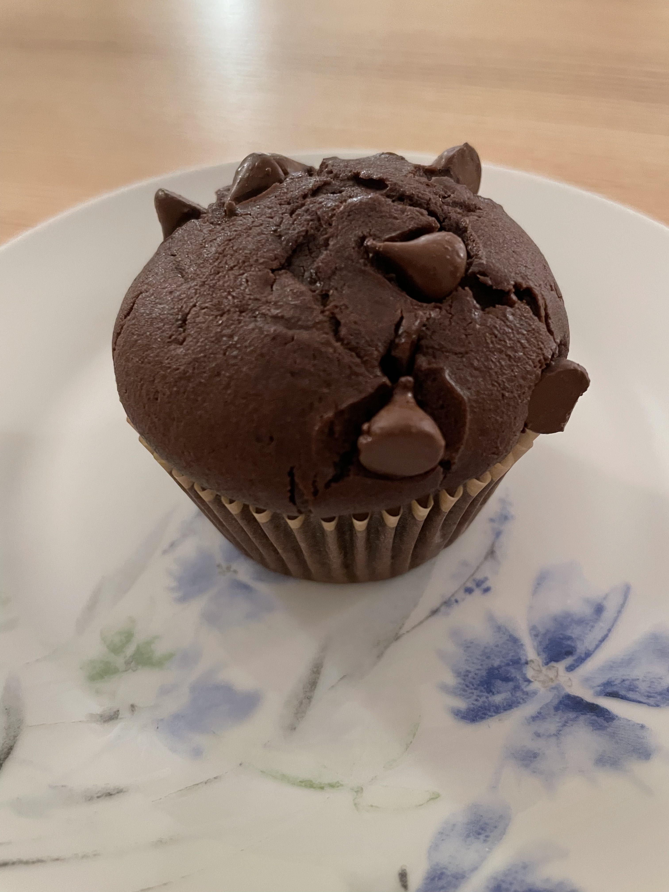

Description
These Best Ever Double Chocolate Muffins are moist and chocolatey, and they make the perfect after school snack! Easy to make in only one bowl!
Because I love baking muffins so much I’ve created a No Fail Muffin Baking Course with all my favourite tips and tricks and muffin-baking secrets to get your homemade muffins into tip top shape!
Ingredients
- 1 1/2 cup all purpose flour
- 1/2 cup cocoa powder
- 3/4 cup granulated sugar
- 1 tablespoon baking powder
- 1/2 teaspoon salt
- 1 cup chocolate chips
- 1 cup milk
- 2 eggs
- 1/2 teaspoon vanilla extract
- 1/3 cup vegetable oil
Steps
- Preheat your oven to 350℉ ( 175℃) and prepare a 12-cup muffin tin with paper liners.
- In a large bowl, whisk together the flour, cocoa powder, sugar, baking powder, and salt, along with the chocolate chips, reserving a few chocolate chips for topping the muffins (optional).
- Into a large liquid measuring cup or bowl, add the milk, eggs, vanilla and oil. Whisk together with a fork.
- Add the liquid ingredients and mix everything together just until no streaks of flour remain.
- Divide the batter evenly between the 12 muffin cups and top with the remaining chocolate chips (optional).
- Bake at 350℉ ( 175℃) for about 23-25 minutes, or until a toothpick inserted into the centre of one of the muffins comes out clean.